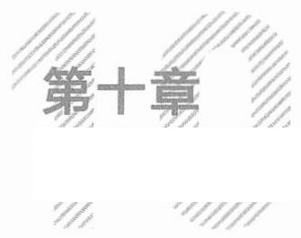

老产品做营销，可以沿着已经形成的用户认知惯性去做强化。而新产品，尤其是新品类做营销，则需要一场认知战。
认知战：从新主张到共识
认知战，全称为认知领域作战，是指为了达到某种目的，操纵信息、情绪和认知过程，影响人们的思维、认知和态度，从而影响个体或群体的行为和决策。
什么是一场认知战的胜利成果? 就是新共识的诞生。
一、媒体认知战的五个要点
农夫山泉矿泉水进攻以娃哈哈为代表的纯净水，是认知战的一个经典案例。
1996年，钟üü创办农夫山泉。当时市场上的瓶装水产品主要是纯净水。纯净水是指通过蒸馏、去离子化等过程生产出来的瓶装水。娃哈哈、怡宝等是当时纯净水市场的头部品牌。
瓶装水具有典型的功能价值，是刚需标品。所以，核心比拼的是供应链的控制力和效率。娃哈哈的掌舵人宗庆后持盘扎实，把大渗透、大分销玩得明明白白，领先于行业形成了严密的线下经销网络； 品牌推广方面，娃哈哈上过央视和报纸头版，请当红明星代言，能在短短
265